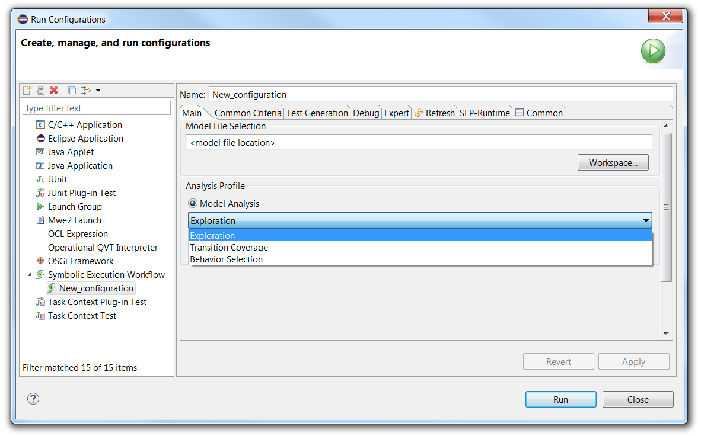
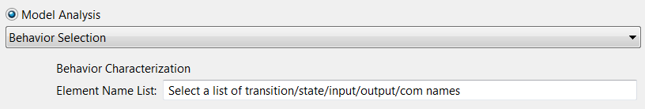

The tab is shown below :
Under "Model File Selection", you should enter the path to your ".xlia" model file.
In "Model Analysis" you can choose between the 3 following types of analysis :
When choosing "Behavior Selection", additional widgets appear as follows :
In the "Element Name List", you should enter a text which follows a particular syntax in order to select a list of elements to characterize the behavior to be found.
The list can be a set of the following elements :
All items must be separated by semicolumns.